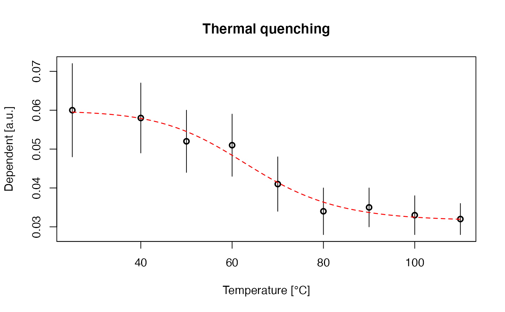

Applying a nls-fitting to thermal quenching data.
fit_ThermalQuenching( data, start_param = list(), method_control = list(), n.MC = 100, verbose = TRUE, plot = TRUE, ... )
| data | data.frame (required): input data with three columns, the first column contains temperature values in deg. C, columns 2 and 3 the dependent values with its error |
|---|---|
| start_param | list (optional): option to provide own start parameters for the fitting, see details |
| method_control | list (optional): further options to fine tune the fitting, see details for further information |
| n.MC | numeric (with default): number of Monte Carlo runs for the error estimation. If |
| verbose | logical (with default): enables/disables terminal output |
| plot | logical (with default): enables/disables plot output |
| ... | further arguments that can be passed to control the plotting, support are |
The function returns numerical output and an (optional) plot.
-----------------------------------
[ NUMERICAL OUTPUT ]
-----------------------------------
RLum.Results-object
slot: @data
[.. $data : data.frame]
A table with all fitting parameters and the number of Monte Carlo runs used for the error estimation.
[.. $fit : nls object]
The nls stats::nls object returned by the function minpack.lm::nlsLM. This object can be further passed to other functions supporting an nls object (cf. details section in stats::nls)
slot: @info
[.. $call : call]
The original function call.
-----------------------------------
[ GAPHICAL OUTPUT ]
-----------------------------------
Plotted are temperature against the signal and their uncertainties. The fit is shown as dashed-line (can be modified). Please note that for the fitting the absolute temperature values are used but are re-calculated to deg. C for the plot.
Used equation
The equation used for the fitting is
$$y = (A / (1 + C * (exp(-W / (k * x))))) + c$$
W is the energy depth in eV and C is dimensionless constant. A and c are used to adjust the curve for the given signal. k is the Boltzmann in eV/K and x is the absolute temperature in K.
Error estimation
The error estimation is done be varying the input parameters using the given uncertainties in a Monte Carlo simulation. Errors are assumed to follow a normal distribution.
start_param
The function allows the injection of own start parameters via the argument start_param. The
parameters needs to be provided as names list. The names are the parameters to be optimised.
Examples: start_param = list(A = 1, C = 1e+5, W = 0.5, c = 0)
method_control
The following arguments can be provided via method_control. Please note that arguments provided
via method_control are not further tested, i.e., if the function crashes your input was probably
wrong.
| ARGUMENT | TYPE | DESCRIPTION |
upper | named vector | sets upper fitting boundaries, if provided boundaries for all arguments
are required, e.g., c(A = 0, C = 0, W = 0, c = 0) |
lower | names vector | sets lower fitting boundaries (see upper for details) |
trace | logical | enables/disables progression trace for minpack.lm::nlsLM |
weights | numeric | option to provide own weights for the fitting, the length of this
vector needs to be equal to the number for rows of the input data.frame. If set to NULL no weights
are applied. The weights are defined by the third column of the input data.frame. |
0.1.0
Kreutzer, S., 2021. fit_ThermalQuenching(): Fitting Thermal Quenching Data. Function version 0.1.0. In: Kreutzer, S., Burow, C., Dietze, M., Fuchs, M.C., Schmidt, C., Fischer, M., Friedrich, J., Mercier, N., Philippe, A., Riedesel, S., Autzen, M., Mittelstrass, D., Gray, H.J., Galharret, J., 2021. Luminescence: Comprehensive Luminescence Dating Data Analysis. R package version 0.9.16. https://CRAN.R-project.org/package=Luminescence
Wintle, A.G., 1975. Thermal Quenching of Thermoluminescence in Quartz. Geophys. J. R. astr. Soc. 41, 107–113.
Sebastian Kreutzer, Geography & Earth Sciences, Aberystwyth University (United Kingdom) , RLum Developer Team
##create short example dataset data <- data.frame( T = c(25, 40, 50, 60, 70, 80, 90, 100, 110), V = c(0.06, 0.058, 0.052, 0.051, 0.041, 0.034, 0.035, 0.033, 0.032), V_X = c(0.012, 0.009, 0.008, 0.008, 0.007, 0.006, 0.005, 0.005, 0.004)) ##fit fit_ThermalQuenching( data = data, n.MC = NULL) #> #> [fit_ThermalQuenching()] #> #> A = 0.02831547 ± NA #> C = 8.67841e+14 ± NA #> W = 0.9986941 ± NA eV #> c = 0.0315122 ± NA #> --------------------------------  #> #> [RLum.Results-class] #> originator: fit_ThermalQuenching() #> data: 2 #> .. $data : data.frame #> .. $fit : nls #> additional info elements: 1